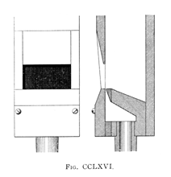
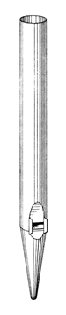

|
Hohlflöt[e] German Hohl Flute German/English |
Holpijp Dutch | |
|
Hohlpfeife German Hohpfeife German Hol-Flute English |
Holfluit Dutch Holflöte German Holpfeife German |
Holpipe (unknown) Flûte Creuse French Weitflöte German |
Over the centuries the name Hohlflöte and its variants have been used for a variety of flute-toned stops. According to Grove and Williams, it was a wide scaled open metal flute in central and northern Germany around 1500, in the Rhineland and southern Germany during the next century it was often a wide-scaled stopped flute, and in the Netherlands it might be a Gedeckt, Rohrflöte or Quintaton. Adlung describes it as an open flute of wide scale and hollow tone, and saw little or no difference between it and the Waldflöte. Wedgwood reports that the Hol-Flute of �Father� Bernard Smith (late 1600's) was a Rohrflöte; Hopkins & Rimbault describe Father Smith's Hohlflöte as having a square cross-section of 1" at 2' C. By the 19th century, the name Hohlflöte had come to mean a wide-scaled open wooden flute of dull, hollow tone. The best description we have of this stop comes from Audsley, who provides the illustrations reproduced here.
 The Hohlflöte, of wood, is made in different forms; all with the aim of obtaining from pipes of moderate scales the maximum volume of the tone peculiar to the stop, while speaking on a copious supply of wind at a moderate pressure. We cannot do better than describe the formation of the pipes of two representative stops, made and voiced by the distinguished artist, Edmund Schulze, of Paulinzelle. The first stop, from the Organ formerly in the Town Hall of Northampton, was formed of quadrangular pipes of greater width than depth, with the mouth cut on a wide side. The lower portion of a pipe of this stop is shown, in Front View and Longitudinal and Transverse Sections, in Fig. 21 [CCLXVI]. The mouth is of the German form, cut up equal to one-half its width, having a straight upper lip, and its side-pieces and the upper portion of the cap sloped toward the lower lip. |
The second stop, from the Organ in the Church of St. Peter, Hindley, is formed of triangular pipes of greater depth than width, with the mouth cut on the narrow side. The lower portion of the middle c1 pipe of this stop is shown in Front View and Longitudinal and Transverse Sections, in Fig. 22 [CCLXVIII]. The peculiar formation of the pipe is clearly indicated by the Sections. The internal dimensions are 1 5/8 inches in width at the mouth by 2 1/8 inches in depth. These measurements give an internal transverse area equal to that of a quadrangular pipe of 1 3/8 inches in width by 1 1/16 inches in depth. The adoption of the triangular form is simply for the purpose of obtaining a mouth large in proportion to the transverse area of the pipe, as in the case of the preceding example. The mouth is 7/8 inch in height and arched as shown.
Hohlflöte pipes have also been made of greater depth than width, as in the stop in the Great of the Organ in the Public Halls, Glasgow, constructed by Lewis, of London [figure CCLXVII]. The tenor C pipe of this stop measures 2 1/8 inches in width by 2 11/16 inches in depth. The mouth, formed on the wide way of the pipe, is cut up 1 7/8 inches in height, and its upper lip is thick and carefully rounded, as is generally the case in Hohlflöte pipes. The bass octave of this stop is, as usual, of large-scaled covered pipes. Provision for a copious supply of wind is necessary in the pipes of the Hohlflöte. The stop has in some instances been made of metal; but, in the matter of tone, it cannot be considered the true stop when of that material.
German organ builders, in their desire to obtain as wide a mouth as possible in a square pipe, have introduced an oblique mouth in some of their Hohlflöte; by this expedient gained a slight excess of width over that furnished by a horizontal mouth. The tone of the pipes is in no way interfered with, beyond a slight increase in power, by this treatment, as the wind-sheet, rising vertically, has the same distance to travel at every point to reach the upper lip. In the illustration, Fig. CCLXIX, are shown a Front View and Section of a square Hohlflöte pipe, having the oblique German mouth and inclined block.
Wedgwood provides a drawing of a metal Hohlflöte, reproduced here, but provides no details of its construction. He also mentions that sometimes inverted mouths are used on the wooden variety. Bonavia-Hunt dates Schulze's quadrangular Hohlflöte from the 1851 �exhibition organ�.
Audsley translates the name Hohlflöte as �hollow-toned flute�, but Grove says that it probably derives from Holunder, meaning �elder tree�, and that the prefixes hol, hohl (�hollow�) and holz (�wood�) were often confused. Flûte Creuse, which means �hollow flute�, is described as a synonym for Hohlflöte by every sources which mention it at all, including Maclean. Maclean also claims it to be equivalent to the Flauto Traverso, but this may have been an error. Adlung claims that �the Netherlanders� use the name Hohlflöte for the Schwiegel, and also that the 1' Hohlflöte is the same as the Sifflöte and Twenty-Second.
See also Flûte Fondamentale, Hole-Flute, Weitpfeife.Osiris contains the following number of examples, the oldest of which are listed below:
| 16' | 8' | 4' | 2' | 1 1/2' | 1' | |
| Holpijp | -- | about 100 | 2 | 1 | -- | 1 |
| Hohl Flute | -- | 34 | 7 | 1 | -- | -- |
| Hohlflöte | -- | 20 | 10 | 1 | -- | -- |
| Hohlpfeife | 1 | 5 | 7 | 4 | -- | 1 |
| Holfluit | -- | 5 | 1 | 1 | 1 | -- |
| Flûte Creuse | -- | 6 | 6 | 2 | -- | -- |
| Holpipe | -- | 2 | -- | -- | -- | -- |
| Holflöte | -- | 2 | -- | -- | -- | -- |
| Weitflöte | -- | -- | -- | 1 | -- | -- |
No examples of Hohpfeife, Holpfeife or Hol Flute are known. Contributions welcome.
Hohlflote 4', Ruckpositiv; St. Jakobi, Lubeck, Germany; Stellwagen 1636.
Hohlflote 8', Oberwerk; Castle Church, Altenburg, Germany; Troust 1739.
Hohlflote 4', Manual I; Vyssi Brod Abbey Church of Our Lady, Bohemia, Czechoslovakia; Breinbauer 1892.
Hohlflöte 8', 4', Great; Church of St Batholomew, Armley, England; Schulze 1866-69. At least one of these stops is triangular wood.
Hohl Flute 4', Swell; Congregational Church, Great Barrington, Massachusetts, USA; Roosevelt 1883.
Hohl Flute 8', Great, Swell, Choir; Town Hall, Sydney, New South Wales, Australia; Hill 1886-90.
Hohl Flute 8', Great; Thomas Coats Memorial Church, Paisley, England; Hill 1890.
Hohlpfeiff 8', Hauptwerk; Basilika, Steinfeld, Germany; König 1727 (restored 1981).
Hohlpfeiff 8', Unterwerk; Klosterkirche, Altenberg, Germany; Schöer 1757 (restored 1976).
Holfluit 8', Bovenwerk; Martinikerk, Groningen, Netherlands; de Mare? 1564. It is not clear whether the stop had this name in 1564, or was renamed by Schnitger in a 1691 rebuild by Schnitger.
Holfluit 4', Bovenpositief; Michaelkskerk, Zwolle, Netherlands; Schnitger 1721.
Holflöte 8', Hauptwerk; St. Petri und Paul, Cappel, Germany; Schnitger 1680. The pipes are from an earlier instrument by an unknown builder, C-b soldered Gedackt, from c1 with chimneys.
Holflöte 8', Schwellwerk; Cathedral, Paderborn, Germany; Sauer 1981.
Holpijp 8', Werk; O. L. Vrouwkerk, Kortrijk, Belgium; Van den Eekhoute 1529.
Holpijp 8, Hoofdwerk; Holpijp 2', Borstwerk; O. L. Vrouwkerk, Antwerpen, Belgium; Brebos 1565-67.
Holpijp 8, Hoofdwerk; St. Jacobskerk, Antwerpen, Belgium; Van Laere 1589.
Holpipe 8', OberPositiff; St. Stephanskirche, Tangermünde, Germany; Scherer 1624.
Holpipe 8', Main manual; Reformed Church, Twello, Netherlands; Meere 1819.
Flute Creuse 8', Positif Expressif; Guilmant mansion, Meudon, France; Cavaillé-Coll 1899.
Weitflöte 2', Hauptwerk; Cathedral, Cologne, Germany; Klais 1947, 1956. This stop is apparently no longer extant.
See the Sound Files appendix for general information.
| Hohl Flute 8', Great | Prudhoe Methodist Church, Northumberland, Scotland | arpeggio | St. Anne | |
| Hohlflöte 8', Hauptwerk | Grace Lutheran Church, Champaign, Illinois, USA | Casavant, 1975 | arpeggio | St. Anne |
|
Original website compiled by Edward L. Stauff. For educational use only. Hohlflote.html - Last updated 27 September 2006. |
Home Full Index |
{kind=link}
{kind=link}
{kind=link}
{kind=link}